Frieren: Beyond Journey's End, Sousou no Frieren, Frieren: Beyond Journey's End, 葬送のフリーレン
The demon king has been defeated, and the victorious hero party returns home before disbanding. The four—mage Frieren, hero Himmel, priest Heiter, and warrior Eisen—reminisce about their decade-long journey as the moment to bid each other farewell arrives. But the passing of time is different for elves, thus Frieren witnesses her companions slowly pass away one by one. Before his death, Heiter manages to foist a young human apprentice called Fern onto Frieren. Driven by the elf's passion for collecting a myriad of magic spells, the pair embarks on a seemingly aimless journey, revisiting the places that the heroes of yore had visited. Along their travels, Frieren slowly confronts her regrets of missed opportunities to form deeper bonds with her now-deceased comrades.
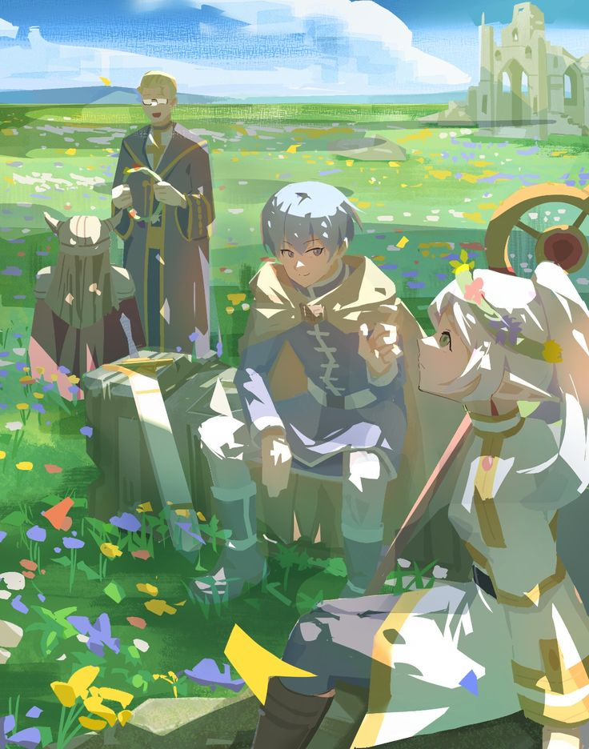
86, Eighty Six, 86―エイティシックス―
The Republic of San Magnolia. For a long time, this country has been besieged by its neighbor, the Giadian Empire, which created a series of unmanned drones called the Legion. After years of painstaking research, the Republic finally developed autonomous drones of their own, turning the one-sided struggle into a war without casualties—or at least, that's what the government claims. In truth, there is no such thing as a bloodless war. Beyond the fortified walls protecting the eighty-five Republic territories lies the "nonexistent" Eighty-Sixth Sector. The young men and women of this forsaken land are branded the Eighty-Six and, stripped of their humanity, pilot the "unmanned" weapons into battle... Shinn directs the actions of a detachment of young Eighty-Sixers while on the battlefield. Lena is a "handler" who commands the detachment from the remote rear with the help of special communication. The farewell story of the severe and sad struggle of these two begins!
 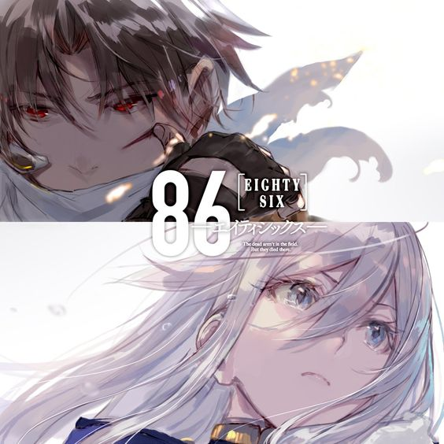
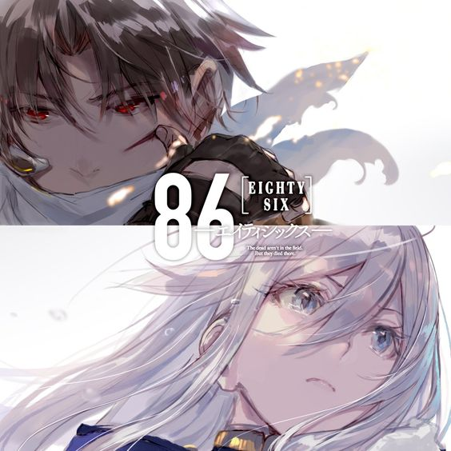
Bungo Stray Dogs, Bungou Stray Dogs, Literary Stray Dogs, 文豪ストレイドッグス
For weeks, Atsushi Nakajima's orphanage has been plagued by a mystical tiger that only he seems to be aware of. Suspected to be behind the strange incidents, the 18-year-old is abruptly kicked out of the orphanage and left hungry, homeless, and wandering through the city. While starving on a riverbank, Atsushi saves a rather eccentric man named Osamu Dazai from drowning. Whimsical suicide enthusiast and supernatural detective, Dazai has been investigating the same tiger that has been terrorizing the boy. Together with Dazai's partner Doppo Kunikida, they solve the mystery, but its resolution leaves Atsushi in a tight spot. As various odd events take place, Atsushi is coerced into joining their firm of supernatural investigators, taking on unusual cases the police cannot handle, alongside his numerous enigmatic co-workers. [Written by MAL Rewrite]
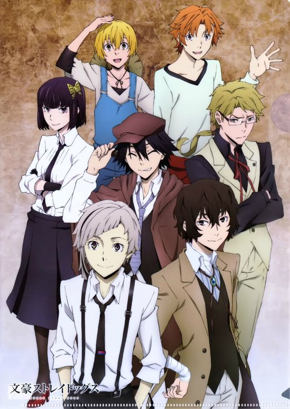 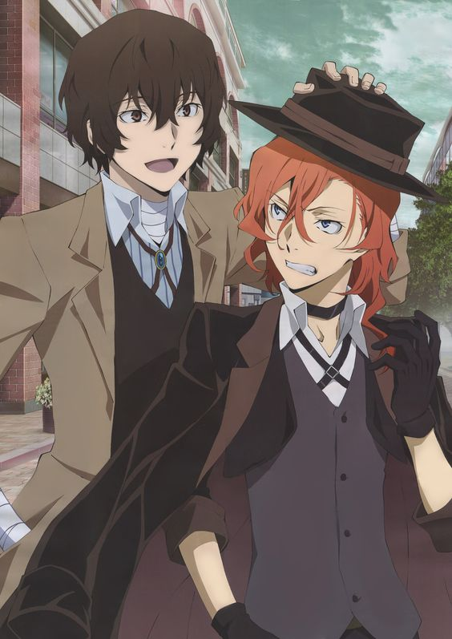The Apothecary Diaries, Kusuriya no Hitorigoto, Drugstore Soliloquy, 薬屋のひとりごと
In an imperial court in ancient China, it has been a few months since a 17-year-old girl known as Maomao was kidnapped and forced to work as a low-level servant at the emperor's palace. Still, she manages to retain her curious and pragmatic spirit, planning to work until her years of servitude are over. One day, however, she catches wind of the fact that the emperor's two infants have fallen gravely ill. She decides to secretly take action, drawing on her experience as a pharmacist raised in the poor red-light district. Despite Maomao's attempts to remain anonymous, she soon catches the eye of Jinshi, an influential eunuch who recognizes her talents. Maomao soon finds herself in the emperor's inner court, where she gradually makes a name for herself by utilizing her knowledge and eccentric personality to solve various medical mysteries.
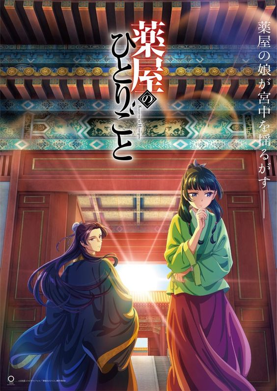 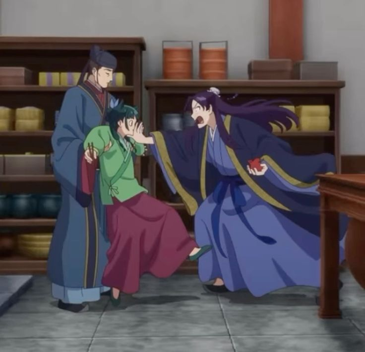Summer Time Rendering, Summertime Render, Summer Time Rendering, サマータイムレンダ
Since the death of his parents, Shinpei Ajiro had lived with the Kofune family and their two daughters—Mio and Ushio. Although he then left his home island to continue his education in Tokyo, Shinpei returns after Ushio tragically drowns during the attempted rescue of a little girl. During the funeral, his best friend informs him about bruises found around Ushio's neck, casting doubt over the cause of her death. Suspecting a murder has taken place, Shinpei reevaluates recent events, but strange incidents only continue to transpire. Disappearing people and other unexplainable occurrences lead Mio to recall an old folktale referring to entities called "Shadows," which may not be entirely fantasy. Supposedly, an encounter with one's Shadow foretells the person's impending demise. Facing the dark side of Hitogashima Island, Shinpei stands against his grim fate to fulfill Ushio's final will—to protect Mio.
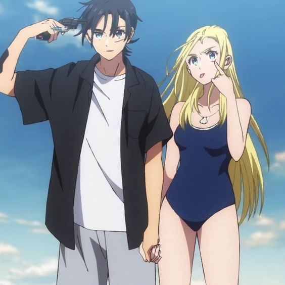 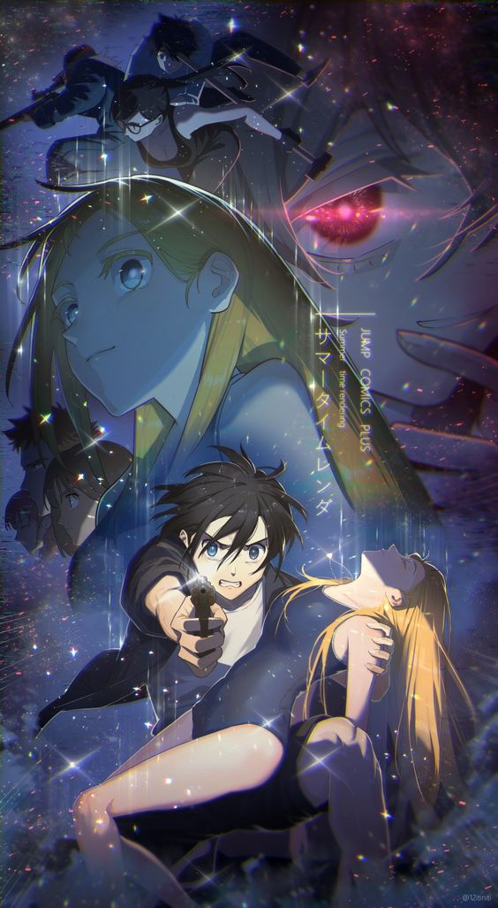Kaguya-sama: Love is War, Kaguya-sama wa Kokurasetai: Tensai-tachi no Renai Zunousen
At the renowned Shuchiin Academy, Miyuki Shirogane and Kaguya Shinomiya are the student body's top representatives. Ranked the top student in the nation and respected by peers and mentors alike, Miyuki serves as the student council president. Alongside him, the vice president Kaguya—eldest daughter of the wealthy Shinomiya family—excels in every field imaginable. They are the envy of the entire student body, regarded as the perfect couple. However, despite both having already developed feelings for the other, neither are willing to admit them. The first to confess loses, will be looked down upon, and will be considered the lesser. With their honor and pride at stake, Miyuki and Kaguya are both equally determined to be the one to emerge victorious on the battlefield of love! [Written by MAL Rewrite]
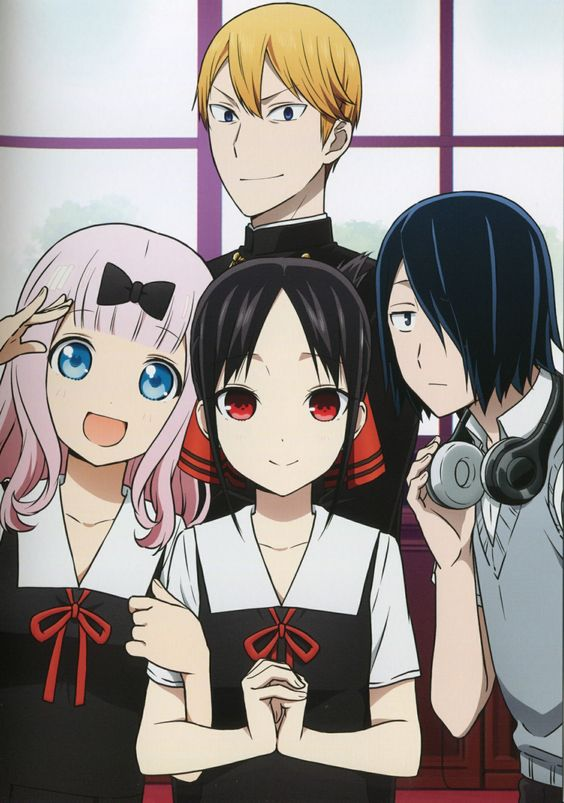 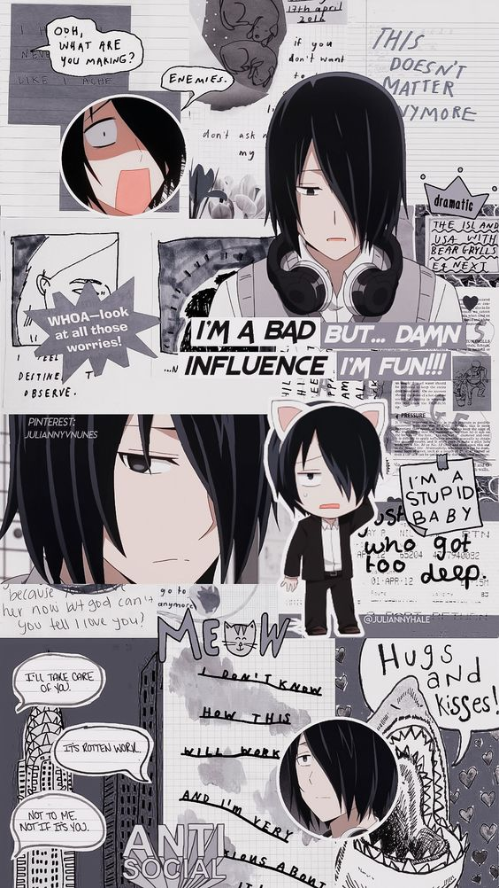Vinland Saga, ヴィンランド・サガ
Young Thorfinn grew up listening to the stories of old sailors that had traveled the ocean and reached the place of legend, Vinland. It's said to be warm and fertile, a place where there would be no need for fighting—not at all like the frozen village in Iceland where he was born, and certainly not like his current life as a mercenary. War is his home now. Though his father once told him, "You have no enemies, nobody does. There is nobody who it's okay to hurt," as he grew, Thorfinn knew that nothing was further from the truth. The war between England and the Danes grows worse with each passing year. Death has become commonplace, and the viking mercenaries are loving every moment of it. Allying with either side will cause a massive swing in the balance of power, and the vikings are happy to make names for themselves and take any spoils they earn along the way. Among the chaos, Thorfinn must take his revenge and kill Askeladd, the man who murdered his father. The only paradise for the vikings, it seems, is the era of war and death that rages on. [Written by MAL Rewrite]
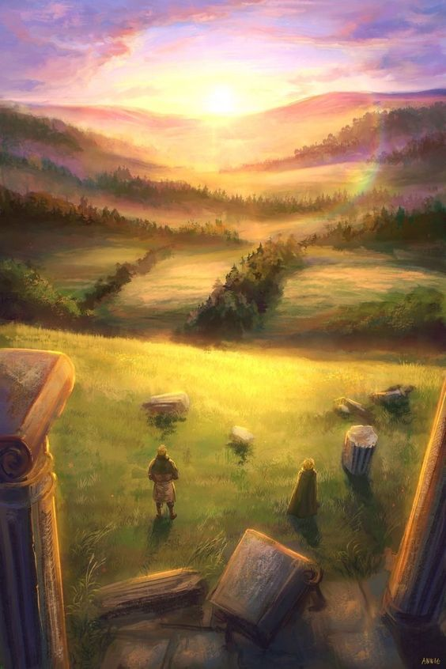 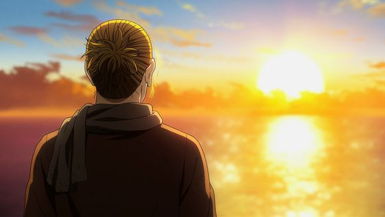Ranking of Kings, Ousama Ranking, King Ranking
The web manga centers around Bojji, a deaf, powerless prince who cannot even wield a children's sword. As the firstborn son, he strives hard and dreams of becoming the world's greatest king. However, people mutter about him behind his back as "a good-for-nothing prince" and "no way he can be king." Bojji is able to make his first ever friend, "Kage" (shadow)—a literal shadow on the ground who somehow understands Bojji well. (Kage is a survivor of the Kage assassin clan that was all but wiped out. No longer a killer, Kage now makes ends meet by stealing.) The story follows Bojji's coming-of-age as he meets various people in his life, starting with his fateful encounter with Kage.
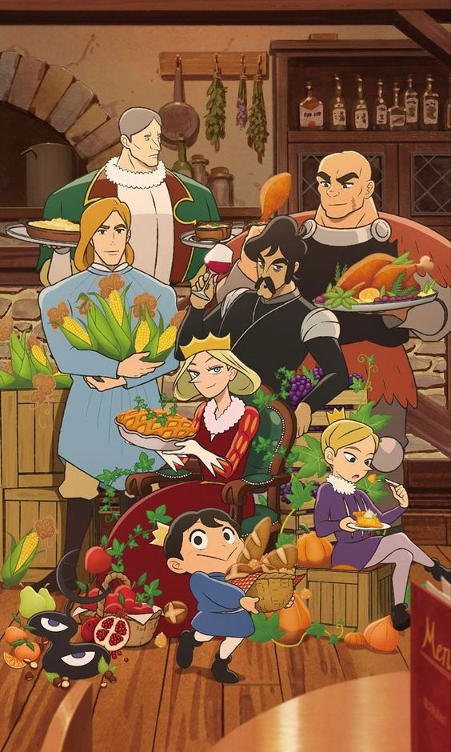
To Your Eternity, Fumetsu no Anata e, To You, the Immortal, 不滅のあなたへ
It, a mysterious immortal being, is sent to the Earth with no emotions nor identity. However, It is able to take the shape of those around that have a strong impetus. At first, It is a sphere. Then, It imitates the form of a rock. As the temperature drops and snow falls atop the moss, It inherits the moss. When an injured, lone wolf comes limping by and lays down to die, It takes on the form of the animal. Finally, It gains consciousness and begins to traverse the empty tundra until It meets a boy. The boy lives alone in a ghost town, which the adults abandoned long ago in search of the paradise said to exist far beyond the endless sea of white tundra. However, their efforts were for naught, and now the boy is in a critical state. Acquiring the form of the boy, It sets off on a never-ending journey, in search of new experiences, places, and people. [Written by MAL Rewrite]
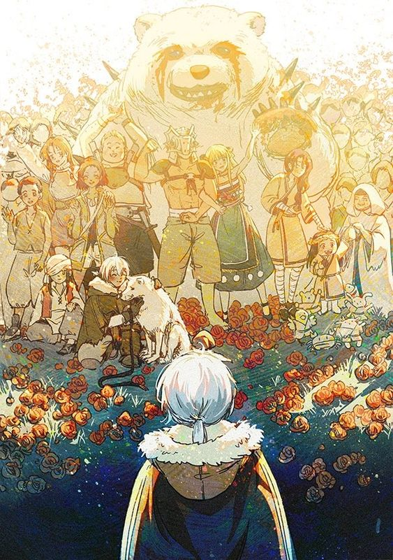 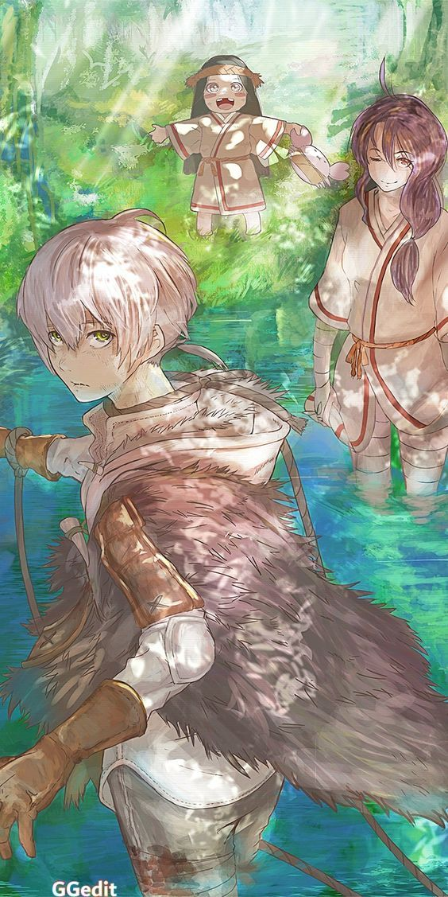Overlord, オーバーロード
The final hour of the popular virtual reality game Yggdrasil has come. However, Momonga, a powerful wizard and master of the dark guild Ainz Ooal Gown, decides to spend his last few moments in the game as the servers begin to shut down. To his surprise, despite the clock having struck midnight, Momonga is still fully conscious as his character and, moreover, the non-player characters appear to have developed personalities of their own! Confronted with this abnormal situation, Momonga commands his loyal servants to help him investigate and take control of this new world, with the hopes of figuring out what has caused this development and if there may be others in the same predicament. [Written by MAL Rewrite]
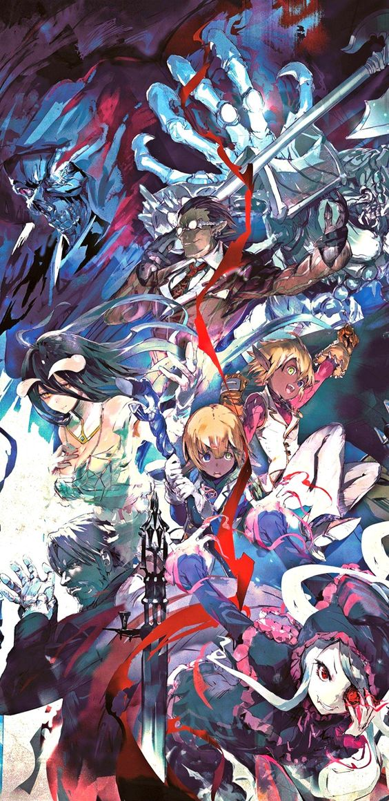 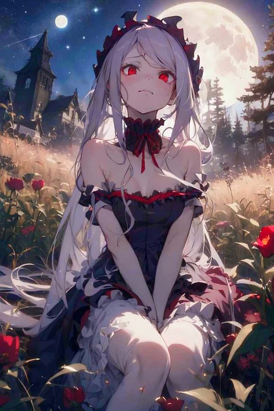